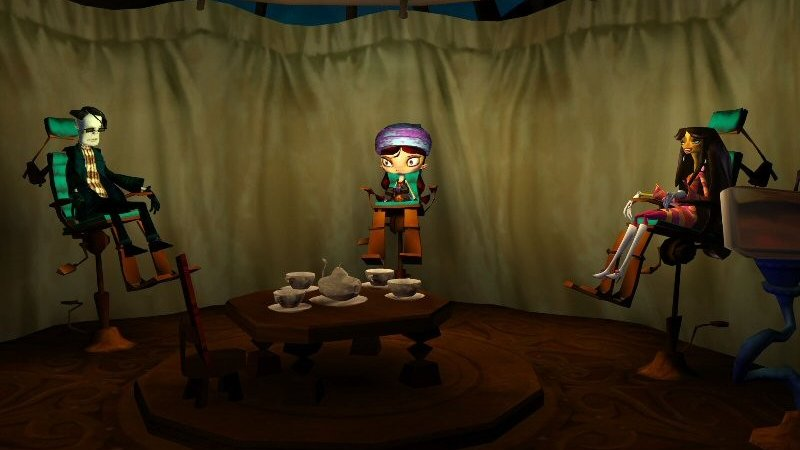
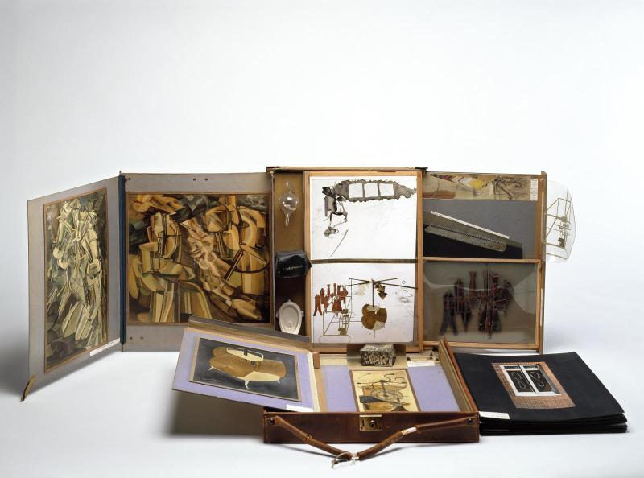
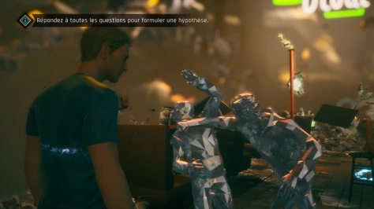
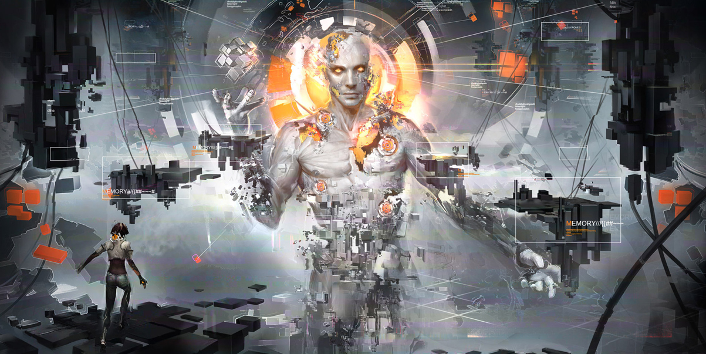
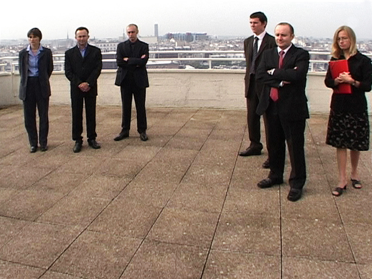
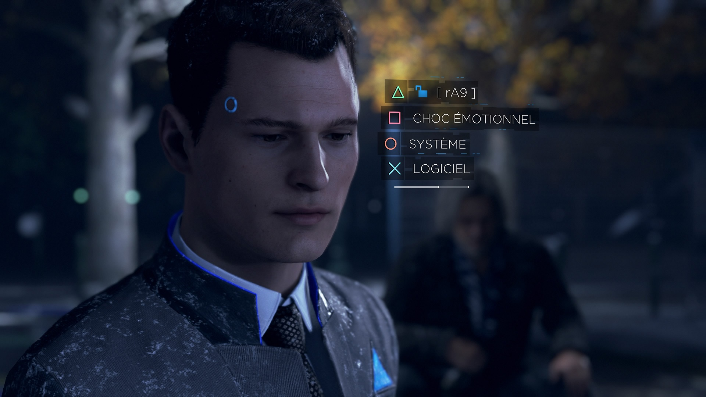

Les jeux vidéo essaient constamment de se renouveler en inventant des mécaniques de plus en plus sophistiquées. La méthode des loci, ou plus généralement appelée palais de la mémoire, est une méthode mnémotechnique, ou « art de mémoire », pratiquée depuis l'Antiquité. Aujourd’hui, nous allons nous intéresser à l’utilisation du palais mental dans le jeu vidéo.
Le palais mental fonctionne grâce au visuel, au spatial et à l’émotionnel. Il sert à stocker des informations. Notre but tout au long de cet article est d’analyser plusieurs jeux afin de décoder les symboles du palais mental utilisés.
Les représentations mentales relèvent de l’abstrait. Chacun peut se représenter des lieux dans l'esprit comme il le souhaite et la hiérarchie des informations est unique à chacun. Un jeu vidéo est fait pour tous, l’expérience peut être personnalisée, mais elle suit tout de même un ou plusieurs scénarios définis.
Comment passe-t-on de l’abstraction du palais mental à la visualisation de celui-ci dans les jeux vidéo ?
Représentation directe du palais mental
Psychonauts

Psychonauts est un jeu vidéo de Double Fine Productions sorti en 2005 dans lequel le joueur incarne Razputin, un enfant fuyant le cirque de sa famille pour intégrer le camp de vacances pour devenir psychonaute, un agent spécial capable d’utiliser ses pouvoirs psychiques pour des missions extraordinaires. Raz va très vite s’apercevoir que quelque chose de sordide se passe dans ce camp. En effet, les enfants se font un à un voler leur cerveau ! En visitant les esprits de plusieurs personnages grâce à une porte mentale et en développant ses facultés psychiques, Raz va devoir sauver ses camarades en découvrant qui se cache derrière ce complot.
Dans l’un des premiers niveaux du jeu, on rencontre l’agent spécial Nein qui apprend à Raz à utiliser sa force mentale. Il l’entraîne dans un stand de tir qui se trouve à l’intérieur de son esprit : une boîte dans laquelle il y a une place pour chaque pensée et chaque souvenir a sa place. Cet agencement fait penser à Peter Greenaway, avec sa série de films The Tulse Luper suitcases, sortis entre 2004 et 2005 où l’on retrouve 92 valises contenant chacune un objet qui représente le monde ou bien encore La Boîte en Valise de Marcel Duchamp qui est un musée portatif. Le rangement et l’ordre dans l’esprit de Nein, les valises de Tulse Luper ou le musée portatif de Duchamp rappellent les démarches entreprises pour créer l’Encyclopédie du siècle des Lumières. Identifier, classer, ordonner… telles étaient les missions des grands penseurs à l’origine de la mise en commun du savoir universel. L’Encyclopédie reprend les principes des arts de la mémoire, pour permettre un archivage de connaissances qui serviront aux générations futures. La Boîte en Valise traduit également cette intention d’accessibilité à la culture; en rendant un musée portatif, Duchamp peut le présenter à davantage de monde et répandre plus facilement les œuvres qu’il transporte.
The Tules Luper Suitcases, Greenaway
 Boîte en valise, Duchamp
L’agent Nein étant un personnage logique, méthodique et froid, son esprit est donc représenté comme une boîte d’un blanc aseptisé qui range les souvenirs dans d’autres boîtes monochromes et carrées s’inspirant du design minimaliste allemand des années 1960. Tout ce qui compose l’esprit de l’agent Nein est sous contrôle. Il a notamment des censeurs, petits ennemis à abattre dans les niveaux mentaux, qui s’attaquent à Raz, car ils décrètent qu’il s’agit d’une anomalie qui n’a pas sa place dans cet esprit bien ordonné.
Raz décide d’accélérer son entraînement et fait apparaître un censeur colossal. Ce dernier était resté enfoui dans l’esprit de l’agent Nein avec toutes ses émotions réprimées. Raz doit le combattre en se faufilant entre les souvenirs maintenant éparpillés et les pensées destructrices qui s’attaquent à lui.
Durant ses pérégrinations dans l’esprit des autres personnages, Raz trouvera des coffres contenant leurs secrets enfouis. Ces secrets sont visualisables au travers de diapositives en noir et blanc.
On rencontre également des bribes de l’imagination des hôtes flottant un peu partout dans les différents niveaux. Elles représentent des éléments subliminaux de l’histoire des personnages. Par exemple, dans l’esprit du coach Oleander, les bribes sont souvent des monstres casqués, des soldats ennemis ou des armes, mais parfois on peut trouver des petits lapins tout mignons. On apprendra plus tard que le jeune Oleander a été traumatisé par son père boucher qui a tué son lapin de compagnie. En dernière représentation visuelle de ce jeu, on peut croiser dans les niveaux des bagages émotionnels cachés, qui se lamentent d’avoir perdu leur étiquette.
Twin Mirror
Twin Mirror
Twin Mirror, le nouveau jeu d’aventure narrative de Dontnod, sortira le 1er décembre 2020. Dans celui-ci, le joueur incarne Sam Higgs, ancien journaliste d’investigation retournant dans sa ville natale après la mort de son meilleur ami. Les phases interactives d'exploration sont assez classiques dans leur genre, puisqu'il suffit de porter son regard vers un point d'intérêt pour en obtenir une brève description et, si l'option est disponible, interagir davantage avec l'objet observé pour faire progresser l'histoire.
Avec ses années d’expérience en tant que journaliste d’investigation, Sam a développé l’analyse de l’environnement et de la situation dans laquelle il est. Sam Higgs dispose d’un esprit analytique atypique qui se matérialise par un palais mental où le joueur pourra découvrir différentes facettes de sa personnalité. Il peut se plonger à certains moments dans ses pensées, afin d'observer des choses à froid et reconstituer le cours d'événements majeurs. Dans un monde fractal, représentant une scène de bagarre, le joueur peut observer différents indices préalablement relevés et choisir l'ordre de déroulement des événements.
 Scène de bagarre fractale
Une fois l'ordre déterminé, le joueur peut valider son hypothèse, déclenchant une reconstitution abstraite des événements et, si ces derniers collent entre eux, l’histoire continue. Cette mise en scène emprunte parfois au registre fantastique lorsque Sam se trouve en grande période d'anxiété. Il se trouve alors plongé dans un univers irréel et devra trouver le moyen d'en sortir.
Toutes ces mises en scène dans le jeu sont axées sur le palais mental. À travers cette mécanique de gameplay unique au service de la narration, le palais mental de Sam est un refuge pour lui, un lieu d’expression où il peut être lui-même, sans pression ni jugement, un endroit où le joueur pourra revisiter son passé et consulter ses souvenirs sous la forme de flashbacks. Le palais mental de Sam joue également un rôle déterminant dans sa quête de vérité. Sa projection de différents scénarios l’aide à réfléchir à tous les chemins possibles que peut lui amener sa quête et lui permet de déduire le déroulement d’événements passés ou d’anticiper des moments clés de l’histoire.
Cependant, face à des vestiges de son passé, Sam perd le contrôle. C’est alors qu’entre en scène son Double, que lui seul peut voir, une représentation d’un lui-même empathique et sociable, celui qu’il aimerait réellement être. C’est un soutien sur lequel il a toujours pu compter pour le guider afin de s’intégrer dans une société.
Enfin, lors de certaines représentations du palais mental, on retrouve des éléments en lévitation, notamment des objets de la société de consommation au ralenti qui sont projetés dans les airs.
Représentation indirecte du palais mental
Remember Me
 Remember Me
Remember Me est un jeu d’aventure d’anticipation développé par Dontnod en 2013 qui prend place dans Néo-Paris en 2084. Le joueur y incarne Nilin, une hackeuse de la mémoire qui a pour mission de retrouver ses souvenirs volés par l’entreprise Memorize, une superpuissance qui exerce le monopole du contrôle des souvenirs numérisés.
Les objectifs principaux de Nilin seront de retrouver des personnes liées à son passé et de modifier leurs souvenirs de sorte à ce qu’ils répondent de leurs actes en interagissant avec les éléments de la scène représentée par une vidéo. Cette manipulation intrusive permet au joueur de devenir narrateur, metteur en scène, et de réécrire les événements pour créer des nouvelles relations de cause à effet.
Cela n’est pas sans rappeler Martin Le Chevallier, artiste plasticien français, qui présente des installations et des films où les spectateurs pouvaient modifier le scénario. Dans Une minute de silence, une vidéo interactive réalisée en 2003, seize membres d’une entreprise sont rassemblés pour observer la minute de silence qui succède au 11 septembre 2001. Le spectateur peut cliquer sur chacun d’entre eux pour briser ce silence. Il voit alors ce qu’ils voient et entend ce qu’ils pensent. Il peut ainsi naviguer d’individu en individu et de conscience en conscience. De cette manière, le spectateur devient metteur en scène car c’est selon ses choix que la vidéo racontera différentes histoires.
 Minute de silence, Martin Le Chevallier
Un autre exemple d'œuvre générée par les spectateurs : Le Papillon, vidéo interactive réalisée en 2005. Dans ce film, Mathieu Amalric joue un personnage principal à la recherche du bonheur. Cependant, dès qu’il termine d’accomplir une tâche le rapprochant de son but, l’action se fige et laisse le personnage contemplatif immobile. Ce dernier demeure dans cet état jusqu’à ce que le spectateur décide de le perturber. Dans ce cas, le personnage sort de sa zone de confort, se trouve une autre tâche et se fige à nouveau une fois celle-ci accomplie en attendant la prochaine perturbation du spectateur qui veut faire avancer l'action.
Petit papillon, Martin Le Chevallier
Dans Remember Me, le joueur peut ainsi modifier les souvenirs d’un personnage pour répondre à un objectif précis. Par exemple, Nilin va se rendre au bureau du maire et l’inciter à se suicider. Sans avoir besoin de le confronter, elle utilise son arme qui lui permet de s’infiltrer dans ses souvenirs pour les modifier. Ainsi la personnalité du personnage se retrouve totalement mutée par les nouveaux souvenirs fabriqués, l’homme puissant qui s’apprêtait à durcir la sécurité de sa ville devient un assassin submergé de culpabilité. Le joueur, en plus d’intervenir sur les événements de l’histoire, en a changé les personnages eux-mêmes. On met en œuvre ici une théorie populaire de philosophie qui est que nos souvenirs seraient ce qui nous définit, ou comme John Lock le pensait, l’identité personnelle serait basée sur “la capacité d’avoir conscience d’actes ou pensées passées”; donc sur la mémoire.
La corruption des souvenirs de Remember Me fait aussi écho à plusieurs cas de distorsion de la mémoire qui ont été étudiés par plusieurs psychologues, notamment Julia Shaw qui a été la première à appliquer ces recherches en criminologie. Même si Remember Me présente cette manipulation dans un contexte de science-fiction, les faux souvenirs peuvent réellement être implantés à n’importe qui et peuvent avoir des conséquences graves sur l’identité personnelle, voire une identité collective comme c’est le cas des nombreux Effets Mandela observés à travers le monde.
L’Effet Mandela est un cas de faux souvenirs s’appliquant à plusieurs personnes qui peuvent n’avoir aucun lien entre elles. Ce phénomène se nomme ainsi car la première personne à l’avoir identifié, Fiona Broom, s’est rendu compte en 2005 lors d'une conférence aux États-Unis qu’elle a toujours pensé que Nelson Mandela était mort en prison dans les années 1980 et que plusieurs personnes présentes, qu’elle n’avait jamais rencontrées auparavant, pensaient la même chose. D’autres Effets Mandela plus connus (le monocle du personnage du Monopoly qui n’existe pas, les quatre personnes dans la voiture de Kennedy lors de son assassinat alors qu’ils étaient en réalité six, la fameuse réplique de Dark Vador “Luc, je suis ton père” qui n’a jamais été prononcée…) montrent que ce phénomène est applicable pour n’importe quel souvenir et pour n’importe qui, ce qui fait de cette distorsion une manipulation dangereuse.
Detroit: Become Human

Detroit: Become Human est un jeu vidéo français développé par Quantic Dream sorti en 2018. En 2038, dans la ville de Détroit aux États-Unis, les androïdes partagent le quotidien des êtres humains en étant à leur service.
Connor, un androïde que le joueur contrôle, est négociateur dans les forces spéciales de la police. Lorsqu’il analyse des scènes de crimes, il utilise le principe du palais mental en se projetant dans la scène et en retraçant l’histoire de manière antichronologique. Le joueur, à travers l’androïde, analyse les scènes de la conséquence vers la cause. Les androïdes ont la capacité de se souvenir de manière infinie et infaillible et de traiter les informations qui les entourent instantanément. Le temps s'arrête évidemment pour nous (le joueur) pendant que nous analysons la scène, mais cela signifie que les androïdes sont capables d'analyser le monde qui les entoure en une fraction de seconde. C'est grâce à leur palais mental qu’ils peuvent aller traiter des informations et prendre des décisions efficacement et rapidement.
L'histoire du jeu se déroule en fonction des choix et actions du joueur, qui peuvent modifier radicalement le cours de l'histoire. Le jeu met le joueur dans le rôle du narrateur. Il propose également des Quick Time Event (QTE) qui est un élément de gameplay de type action contextuelle consistant en une phase particulière où l'exécution des indications affichées à l'écran dans un temps imparti conditionne une issue précalculée.
Detroit: Become Human se pose la question de comment écrire et raconter une histoire. Dans ce genre de scénarisation, il y a un rapport à la littérature, notamment à celle de Jacques Rancière avec Les Bords de la fiction : "ce qui distingue la fiction de l’expérience ordinaire, ce n’est pas un défaut de réalité mais un surcroît de rationalité". Flaubert a changé la littérature en mettant en scène des personnages de second plan et des descriptions d’objets sans rapports directs à l’intrigue. Dans les jeux narratifs, notamment dans Detroit:Become Human chaque action et chaque personnage compte. Même les personnages secondaires les plus insignifiants deviennent des personnages centraux. Chaque quête a son importance et bien que l’on puisse choisir de faire uniquement les quêtes principales, le joueur peut facilement effectuer de multiples quêtes annexes qui le portent dans une tout autre atmosphère. La particularité de ce jeu, en opposition avec Remember Me, est que les choix faits par le joueur sont irrévocables et peuvent avoir des conséquences irréversibles, que ce soit pour des actions principales ou non.
Le joueur peut jouer au travers de trois androïdes différents, on retrouve donc ici une histoire à plusieurs voix, comme on le voit souvent dans la littérature jeunesse. À travers notre avatar, nous prenons réellement conscience des conséquences que peuvent avoir nos choix, jusqu’à devenir un meurtrier pour certains personnages.
Enfin, on retrouve dans Detroit: Become Human un endroit assez particulier pour les androïdes : le jardin zen qui est un jardin présent uniquement dans l’esprit de ceux-ci. Connor utilise ce jardin pour communiquer avec une intelligence artificielle, Amanda. Dans celui-ci, on y retrouve un cycle des saisons, ainsi que beaucoup de détails comme un pont, un jardin, un lac ou des chemins. Cela nous montre la puissance de l’esprit, même artificiel, pour représenter visuellement des éléments importants. Les intelligences artificielles, comme les androïdes, peuvent pénétrer mentalement dans ce lieu, alors que leur corps physique se trouve n'importe où : ils peuvent effectuer une projection de leur l’esprit. CyberLife contrôle tout cela, et peut invoquer de force un esprit d'IA ou l'empêcher de partir, en emprisonnant son esprit à cet endroit alors que son corps peut être contrôlé à distance par eux. On parle ici d'esprit au sujet de machines dont l'humanité est la quête commune des trois personnages. Alors que nous pourrions désigner le jardin zen comme un mécanisme de Cloud, une connexion à un serveur à distance, le jeu insiste sur les perceptions et les émotions qui en découlent. Ce jardin possède des éléments de décorations qui ont pour but de créer une ambiance apaisante, sereine et confortable. Pourquoi se soucier de ces apparences si cet endroit n'était destiné qu'à des machines ? Tout simplement parce qu'il ne l'est pas. Les androïdes utilisant ce lieu s'y projettent lorsqu'ils sont à la recherche d'informations enfouies. Il s'agit d'un lieu introspection que l'on peut considérer comme un palais mental pour nous humains. Ce lieu mis en parallèle avec la recherche d'humanité de ces personnages font écho à la définition de l'identité personnelle de John Lock.
Résumé des clés pour le palais mental dans le jeu vidéo
Bien que nous ayons l’habitude de retrouver notre palais mental uniquement dans notre propre esprit, le jeu vidéo permet de le représenter visuellement pour chacun. Le palais mental dans le jeu vidéo peut donc être dépeint de différentes manières, que cela soit de façon directe - visuelle - ou indirecte.
Pour cela, les développeurs utilisent différentes clés : le principe des QTE, les histoires alternatives ou arbres narratifs, la hiérarchie des quêtes, le système de rangement et la logique de jeu.
Éventuellement, les jeux vidéo peuvent être utilisés directement comme palais mental. Chez certaines personnes, il est plus facile d'utiliser les jeux vidéo comme construction du palais mental. Bien que les palais issus des jeux manquent de réalisme par rapport aux films ou aux lieux de la vie réelle, ils sont certainement plus faciles à mémoriser que les films, car les joueurs sont actifs et immergés dans l’environnement du jeu. Les objets ont une raison d’être car ils sont utilisés pour débloquer des lieux et des quêtes et ils sont plus généralement en mouvement. Les lieux sont déjà fusionnés en une seule carte, sur laquelle les joueurs s’appuient pour créer leur palais mental et se déplacer librement. Solène et Baptiste ainsi que Mathilde détaillent plus ce processus dans leurs articles respectifs.
Sources
Psychonauts. (s. d.). psychonauts.com. Consulté le 17 novembre 2020, à l’adresse http://www.psychonauts.com/
Twin Mirror : Le Nouveau Jeu Vidéo du Studio Français DONTNOD. (s. d.). Twin Mirror. Consulté le 7 novembre 2020, à l’adresse 'https://www.twinmirror-game.com/'
Projets – DONTNOD Entertainment. (s. d.). DONTNOD Projects. Consulté le 17 novembre 2020, à l’adresse https://dont-nod.com/projets/
Martin Le Chevallier, M. C. (s. d.). Martin Le Chevallier. Martin Le Chevallier. Consulté le 17 novembre 2020, à l’adresse http://martinlechevallier.net/
Peter Greenaway, P. G. (s. d.). Tulse Luper Journey. Tules Luper Journey. Consulté le 17 novembre 2020, à l’adresse http://www.tulseluperjourney.com/